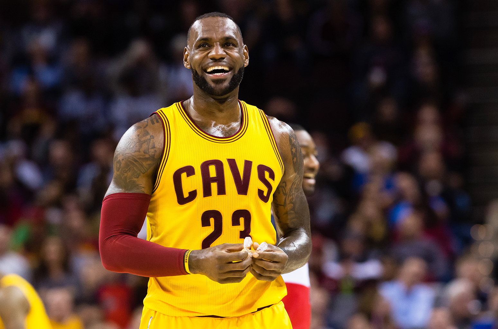

LeBron James

LeBron Raymone Jamesis an American professional basketball player for the Cleveland Cavaliers of the National Basketball Association. James has won three NBA championships, four NBA Most Valuable Player Awards, three NBA Finals MVP Awards, two Olympic gold medals, an NBA scoring title, and the NBA Rookie of the Year Award. He has also been selected to 13 NBA All-Star teams, 13 All-NBA teams, is the Cavaliers' all-time leading scorer, and is the NBA career playoff scoring leader.
Wikipedia